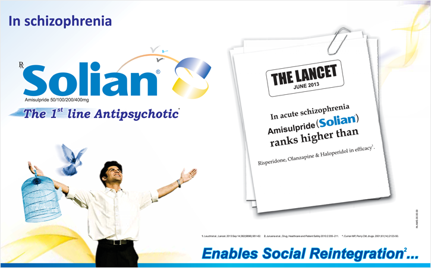

<!DOCTYPE html>
<!--[if lt IE 7 ]><html class="ie ie6" lang="en"> <![endif]-->
<!--[if IE 7 ]><html class="ie ie7" lang="en"> <![endif]-->
<!--[if IE 8 ]><html class="ie ie8" lang="en"> <![endif]-->
<!--[if (gte IE 9)|!(IE)]><!--><html lang="en"> <!--<![endif]-->
<head>

    <!-- Basic Page Needs
  ================================================== -->
	<meta charset="utf-8">
	<title>Times of Pshychiatry</title>
	<meta name="description" content=" |">
	<meta name="medekahealth" content="">
	
    <!-- Mobile Specific Metas
  ================================================== -->
	<meta name="viewport" content="width=device-width, initial-scale=1, maximum-scale=1">
    
    <!-- CSS
  ================================================== -->
		<link rel="stylesheet" href="../css/style.css">
    <link rel="stylesheet" href="../css/responsive.css">
	
	<!--[if lt IE 8]>
       <div style=' clear: both; text-align:center; position: relative;'>
         <a href="http://windows.microsoft.com/en-US/internet-explorer/products/ie/home?ocid=ie6_countdown_bannercode">
           
        </a>
      </div>
    <![endif]-->
    <!--[if lt IE 9]>
		<script src="js/html5.js"></script>
		<script src="js/css3-mediaqueries.js"></script>
	<![endif]-->
	
	<link href='./images/top.ico' rel='icon' type='image/x-icon'/>
    <style type="text/css">
a:hover {
	cursor:pointer; 
}
</style>
<script type="text/javascript">

//SAG scroller demo #1:

var sagscroller1=new sagscroller({
	id:'mysagscroller',
	mode: 'manual' //<--no comma following last option
})

//SAG scroller demo #2:

var sagscroller2=new sagscroller({
	id:'mysagscroller2',
	mode: 'auto',
	pause: 2500,
	animatespeed: 400 //<--no comma following last option
})
     function show(id)
     {
		
        if(document.getElementById(id).style.display == 'none')
        {
              document.getElementById(id).style.display='inline';
			  document.getElementById(id).select();
        }
		else if(document.getElementById(id).style.display == 'inline')
        {
              document.getElementById(id).style.display='none';
        } 
     }
    </script>   
</head>
<body>
<!--------------Header--------------->
<header> 
  <div id="logo"><a href="#"></a></div>
</header>
<!--------------Navigation--------------->
<nav>
		<!--<ul class="menu">
    	<li><a href="index.html">About TOP</a></li>
		<li><a href="aboutus.html">About us</a></li>
		<li><a href="contact.html">Contact</a></li>
	</ul>-->
	<div class="minimenu"><div>INDEX</div>
		<select onchange="location=this.value">
        <option></option>
			<option value="home.html">Home</option>
			<option value="Amisulpride.html">Amisulpride</option>
			<option value="DER.html">Divalproex extended release</option>
			<option value="MBD.html">Olanzapine</option>
			<option value="EP.html">Escitalopram</option>
			<option value="ZER.html">Zolpidem extended release</option>
            <option value="SCL.html">Scales</option>
			<option value="GDL.html">Guidelines</option>
			<option value="CN.html">Conference news</option>
            <option value="PMS.html">Psychiatry medical app</option>
            <option value="BR.html">Book review</option> 
		</select>
	</div>
</nav>
<!--------------Content--------------->
<section id="content">
	<span class="content">
	<h12a>Meta-analysis comparing the efficacy and tolerability of 15 antipsychotic drugs </h12a>
    </span>
	<div id="main-content">
		<article>
			<div class="heading">
				<div style="background-color:#770f26; padding:10px; border-radius:10px;"><h11a>How to select the most appropriate drug
for schizophrenia?</h11a><br/><font style="color:#FFF">Consider eficacy, discontinuation rate, weight gain, extrapyramidal side effects, prolactin increase,
QTc prolongation, and sedation while selecting antipsychotic drug for schizophrenia, suggests
a meta-analysis in the Lancet.</font></div>
<div class="info"> by Medeka Health | February 01, 2014</div>
			</div><h12a>Meta-analysis comparing the efficacy and tolerability of 15 antipsychotic drugs </h12a> 
<div class="content"><br/>
<h12aa>Olanzapine and risperidone caused
significantly more weight gain than
amisulpride<sup>3</sup></h12aa> 

<p>Weight gain is one of the most significant
concerns associated with antipsychotic
treatment.</p>
<ul>
<li>All drugs, except haloperidol,
ziprasidone, and lurasidone, caused
more weight gain than placebo <a onMouseOver="cursor:hand;" onClick="javascript:show('vk');"><font color="#770f26">(Figure 4)</font></a>
<div id="vk" runat="server" style="display: none; text-align: justify; font-size:13px;" >
<a  onMouseOver="cursor:hand;"  onClick="javascript:show('vk');"> <p> </p></a></div></li>
<li>Weight gain was most significant with
olanzapine</li>
<li>Treatment with clozapine, iloperidone,
chlorpromazine, sertindole, quetiapine,
risperidone, and paliperidone caused
significantly more weight gain than
amisulpride <a onMouseOver="cursor:hand;" onClick="javascript:show('vk7');"><font color="#770f26">(Figure 4)</font></a>
<div id="vk7" runat="server" style="display: none; text-align: justify; font-size:13px;" >
<a  onMouseOver="cursor:hand;"  onClick="javascript:show('vk7');"> <p> </p></a></div></li>
</ul>   
<br/>

<h12aa>Risk of extrapyramidal side effects
with amisulpride is comparable to
placebo<sup>3</sup></h12aa> 

<ul>
<li>Clozapine showed the lowest intrinsic risk
for extrapyramidal side effects compared
to all other drugs and placebo, followed by sertindole, olanzapine, and quetiapine <a onMouseOver="cursor:hand;" onClick="javascript:show('vk3');"><font color="#770f26">(Figure 5)</font></a>
<div id="vk3" runat="server" style="display: none; text-align: justify; font-size:13px;" >
<a  onMouseOver="cursor:hand;"  onClick="javascript:show('vk3');"> <p> </p></a></div></li>
<li>Haloperidol showed the highest intrinsic risk
for extrapyramidal side effects, followed by
zotepine and chlorpromazine</li>
<li>Amisulride was better tolerated than
risperidone (a drug among the least well
tolerated drugs due to significantly more
extrapyramidal effects, <a onMouseOver="cursor:hand;" onClick="javascript:show('vk4');"><font color="#770f26">Figure 5).</font></a>
<div id="vk4" runat="server" style="display: none; text-align: justify; font-size:13px;" >
<a  onMouseOver="cursor:hand;"  onClick="javascript:show('vk4');"> <p></p></a></div></li>
</ul> 
</div>


<div id="pagi">
 <ul>
<li><a href="AMS-II.html">1</a></li>
<li><a href="AMS-IIa.html">2</a></li>
<li><a class="current"  href="#">3</a></li>
</ul></div>

 <div id="top1">
		<section>
		  <div class="heading">
			<div class="content">
				<ul>
                <li><a href="AMS-I.html">Overview</a></li>
 <li  style="color:#CCC">Meta-analysis comparing the efficacy and tolerability of 15 antipsychotic drugs</li>
             <li><a href="AMS-III.html">Conclusion</a></li>
             <li><a href="AMS-IV.html">References</a></li>

</ul>
                </div></section></div>
			
            </article>
	</div>
	<div id="sidebar">
		<section>
		  <div class="heading">
	    <h2>Contents</h2></div>
			<div class="content">
				<ul>
					<li><a href="Amisulpride.html">Amisulpride</a></li>
					<li><a href="DER.html">Divalproex extended release</a></li>
					<li><a href="MBD.html">Olanzapine</a></li>
					<li><a href="EP.html">Escitalopram</a></li>
					<li><a href="ZER.html">Zolpidem extended release</a></li>
					<li><a href="SCL.html">Scales</a></li>
                    <li><a href="GDL.html">Guidelines</a></li>
                    <li><a href="CN.html">Conference news</a></li>
                  <li><a href="PMS.html">Psychiatry medical app</a></li>
                    <li><a href="BR.html">Book review</a></li>
				</ul>
			</div>
		</section>
		<section>
			<div class="heading"><h2>Archives</h2></div>
			<div class="content">
				<ul>
					<li>Present Issue</li>
					<li><a href="../Issue_3/index.html">Previous Issue</a></li>
				</ul>
			</div>
		</section>
	</div>
	<div class="clear"></div>
</section>
<!--------------Footer--------------->
<footer>
	<p>Copyright © 2013 Medekahealth - All rights reserved. | Design by: MedekaHealth</p>
</footer>
</body></html>